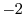
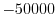

Next: environ.io default
Up: The environ class: MODELLER
Previous: The environ class: MODELLER
Contents
Index
environ(rand_seed=-8123, restyp_lib_file='$(LIB)/restyp.lib', copy=None)
This creates a new environ object. rand_seed is
used to seed the random number generator used throughout MODELLER, and should
be set to a negative integer between 
and 
if you do not want
to use the default value. restyp_lib_file specifies the file to read
the residue type library from; if unspecified, the default ('restyp.lib') file
is used. This file contains the mapping between one-letter residue types and
CHARMM and PDB names; see the FAQ Section 3.1,
Question 8 for the format of this file.
You can assign the new environ object to the Python variable
'env' with the following:
env = environ()
You can release the object from memory when you no longer need it in standard
Python fashion, either by an explicit del(env) or by reassigning
env to some other object.
When you create new MODELLER objects (such as model or
alignment objects) they require an environ object, which they
use for their own default values. Note that each object gets a copy
of the environment, so it is not affected by any changes you make to the global
environment after its creation. You can, however, modify the object's own
environment directly, by assigning to its .env member:
env = environ()
env.io.hetatm = True # New objects will read HETATM records from PDB by default
mdl = model(env) # Create new model object (with hetatm=True)
mdl.env.io.hetatm = False # hetatm is now False, but only for 'mdl'
If in doubt, set anything you need to set within environ before
you create any objects.
Next: environ.io default
Up: The environ class: MODELLER
Previous: The environ class: MODELLER
Contents
Index
Automatic builds
2010-04-21